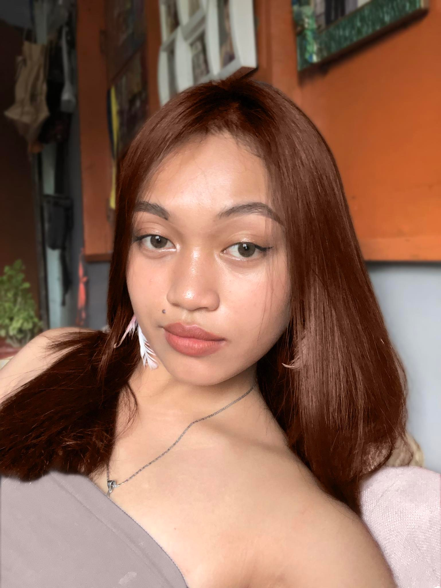

A journey to Become True to Your Self
02.04.23
The adventure of living is in the path of life. We are born, live our lives, and eventually pass away with time. We are attempting to shape our lives in this way. Everyone's life is different. Some people have a lot of problems in life, while others do not. Those who have never faced adversity in their lives have one perspective on life. Those that struggle in life have a different perspective. Life is frequently described as priceless. The various ways in which people seek to save lives reveal this even more clearly.
Life is a single word with many different connotations and meanings. Above all, life is about more than just being; it's also about how one defines that existence. As a result, it's vital to think about life from several angles. Philosophers, academics, poets, and authors have written extensively about what it means to live and, more significantly, what are the essential elements that characterize one's existence. This exercise has, of course, been done in a variety of ways. While philosophers sought to understand the meaning and purpose of people's lives, poets and authors recorded the diversity of life at various times. As a result, life is likely to be more than exciting. Life is beautiful but not always easy, it has problems, too, and the challenge lies in facing them with courage, letting the beauty of life act like a balm, which makes the pain bearable, during trying times, by providing hope Happiness, sorrow, victory, defeat, day-night are the two sides of the me coin. Similarly life is full of moments of joy, pleasure, success and comfort punctuated by misery, defeat, failures and problems. There is no human being on Earth, strong, powerful, wise or rich, who has not experienced, struggle, suffering or failure.
Jia Allyka Bancale
Greetings, my name is Jia Allyka Bancale, aspiring 15 year old young lady that will sooner turn 16 this coming 18th of June. The majority of the individuals I've known for a long time call me Jing, but I prefer the names Ally or Jia because Jing seems so sophomoric. I am a University of Cebu - Lapu-lapu and Mandaue 10th grader. I don't put things off and will complete my tasks without provocation since I am motivated and enthusiastic about what I plan to do. Sooner or later, I can foresee myself working in healthcare. There are no specifics at this time because there will undoubtedly be adjustments, but I know that I'll enroll in a program that will assist a lot of individuals.